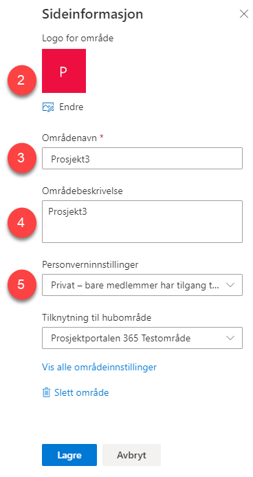

Slik endrer du områdeikon på portefølje- og prosjektområde
Områdeikonet for porteføljenivået og prosjektområdet kan endres av områdets eier/ områdeadministrator. Fremgangsmåten er lik både for portefølje- og prosjektnivå, derfor gjelder informasjonen under for begge.
Ikonet endres enkelt ved hjelp av disse stegene:
- Trykk på tannhjulet øverst i høyre hjørne og velg
Nettstedsinformasjon:

- Velg Endre under Logo for område for å sette inn eller endre logo som skal vises på området
- Under Områdenavn angir du det navnet som skal vises på området.
- Områdebeskrivelse er en mer utfyllende tekst for området.
- Personverninnstillinger, her angir du hvilken tilgangsstyring som skal gjelde for området. Hvis dette er på porteføljenivå, vil innstillingen du velger ikke gjelde for prosjektene som blir opprettet under porteføljen. Prosjektene vil ha selvstendig kontroll på dette.

Trykk Lagre for å lagre endringene.